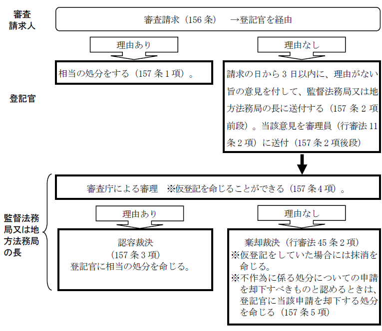
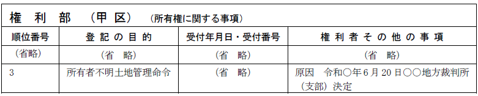

第２編 総 論
第５章 登記申請後の手続等
第３節 情報の公開
【審査請求の手続の流れ】

1. 意義
登記官の処分に不服がある者又は登記官の不作為に係る処分を申請した者は、当該登記官を監督する法務局又は地方法務局の長に審査請求をすることができる（156条1項）。
※なお、不動産登記法25条各号の申請却下事由の存在を看過して登記官が申請を受理して登記を実行した処分に対しての審査請求は、不動産登記法71条の規定により、登記官が職権で登記の抹消をすることができる場合に限られる（大判大5.12.26、最判昭38.2.19等参照）。
ex.登記申請の代理権の授与の意思表示を取り消したにもかかわらず、既に交付していた委任状に基づく申請により所有権の移転の登記がされた場合には、登記義務者は登記の抹消を求めて審査請求をすることはできない。
2. 請求権者
審査請求をすることができる者は、登記官の処分に不服がある者又は登記官の不作為に係る処分を申請した者であって、審査請求が認められることによって直接に利益を受ける立場にある者である。
審査請求人が死亡したときは、相続人等は、審査請求人の地位を承継する（158条参照、行政不服審査法15条1項）。審査請求人の地位を承継した相続人等が2人以上あるときは、その1人に対する通知その他の行為は、全員に対してされたものとみなされる（158条参照、行政不服審査法15条5項）。
| 審査請求ができる | 審査請求ができない |
| ①所有権移転の登記が却下された場合、又は登記官の不作為によって登記がなされない場合の登記権利者又は登記義務者 | ①登記が受理された場合 |
| ②債務者の申請によって相続登記が抹消された場合の代位により当該相続登記を行った債権者（大決大9.10.13） | ②抵当権移転の登記についての抵当権設定者（大決大6.4.25） |
| ③登記事項証明書の交付に関する処分 | - |
審査請求について利害関係を有する者は、法務局又は地方法務局の長の許可を得て、参加人として当該審査請求に参加することはできない。
不動産登記法158条は、行政不服審査法の規定のうち、登記官の処分に係る審査請求について、適用することが相当でないものを適用除外しており、利害関係人が参加人として当該審査請求に参加することができると規定する行政不服審査法24条についても適用除外しているからである。
3. 審査請求の方法
(1) 不服がある処分をした又は不作為があった登記官を監督する法務局又は地方法務局の長に、当該登記官を経由して審査請求をする（156条1項、2項）。
(2) 審査請求は書面ですることを要し、口頭ですることはできない（行政不服審査法19条1項）。
4. 審査請求することができる期間
期間の制限は設けられておらず、不当な処分の是正が可能であって、その利益が存在する限り、いつでも審査請求をすることができる（158条が行政不服審査法18条の適用を除外）。
5. 審査請求の取下げ
審査請求人は、裁決があるまでは、いつでも審査請求を取り下げることができるが（行政不服審査法27条1項）、この審査請求の取下げは、書面でしなければならない（行政不服審査法27条2項）。
6. 資格者代理人が審査請求する場合
登記申請の代理権には審査請求の代理権は含まれていないため、別途代理権を依頼者から与えてもらう必要がある（行政不服審査法13条4項）。
7. 審査請求に対する処分
(1) 登記官の措置
ⅰ 登記官は、処分についての審査請求を理由があると認め、又は審査請求に係る不作為に係る処分をすべきものと認めるときは、相当の処分をしなければならない（157条1項）。
ⅱ 登記官は、審査請求を理由がないと認めるときは、その請求の日から3日以内に意見を付して事件を監督法務局又は地方法務局の長に送付しなければならず、この場合において、当該法務局又は地方法務局の長は、当該意見を行政不服審査法11条2項に規定する審理員に送付しなければならない（157条2項）。
(2) 監督法務局又は地方法務局の長の処分
ⅰ 監督法務局又は地方法務局の長は、処分についての審査請求を理由があると認め、又は審査請求に係る不作為に係る処分をすべきものと認めるときは、登記官に相当の処分を命じ、その旨を審査請求人のほか登記上の利害関係人に通知しなければならない（157条3項）。
ⅱ 監督法務局又は地方法務局の長は、前項の処分を命ずる前に登記官に仮登記を命ずることができる（157条4項）。
ⅲ 法務局又は地方法務局の長は、審査請求に係る不作為に係る処分についての申請を却下すべきものと認めるときは、登記官に当該申請を却下する処分を命じなければならない（157条5項）。
なお、審査請求人の口頭による意見陳述の機会を保障した、行政不服審査法31条1項ただし書についても、登記の特殊性から適用が除外されているので（158条）、審査請求人から申立てがあった場合であっても、法務局又は地方法務局の長は、審査請求人に口頭で意見を述べる機会を与える必要はない。
※再審査請求の可否
審査請求に対する裁決に不服があっても、再審査請求をすることはできない。
8. 行政訴訟・国家賠償請求訴訟との関係
登記官の処分に不服のある者は、行政事件訴訟法に基づき、処分の取消しを求める抗告訴訟を提起することができ（行政事件訴訟法8条1項）、抗告訴訟は、審査請求に対する裁決を経た後でなければ提起することができない旨の定めがあるときを除き、審査請求に関わらず、直ちに提起できる。そして、不動産登記法は、これを前もって審査請求すべき規定を設けていないため（156条から158条参照）、取消訴訟と審査請求を併行して行うことができる。
1. 意義
登記官に対する登記事項証明書（※）及び登記事項要約書の交付請求は、手数料を納付して、誰でもすることができる（119条1項、2項）。
※登記記録に記録されている事項の全部を証明した「全部事項証明書」と一部を証明した書「一部事項証明書」がある
2. 手数料等
(1) 手数料
手数料の納付は、収入印紙をもってしなければならない（119条4項本文）。ただし、法務省令で定める方法で登記事項証明書の交付を請求するときは、法務省令で定めるところにより、現金をもってすることができる（119条4項ただし書）。
手数料の額は、物価の状況、登記事項証明書の交付に要する実費その他一切の事情を考慮して政令で定める（119条3項）。
(2) 交付請求先
登記事項証明書の交付の請求は、法務省令で定める場合を除き、請求に係る不動産の所在地を管轄する登記所以外の登記所の登記官に対してもすることができる（119条5項）。
(3) 請求情報
登記事項証明書の交付の請求をするときは、次の事項を内容とする情報（請求情報）を提供しなければならない（不登規193条1項1～7号）。登記事項要約書や登記簿の附属書類の閲覧の請求をするときも同じである。
ⅰ 請求人の氏名又は名称
ⅱ 不動産所在事項又は不動産番号
ⅲ 交付の請求をする場合にあっては、請求に係る書面の通数
ⅳ 登記事項証明書の交付の請求をする場合にあっては、196条1項各号（同条2項において準用する場合を含む。）に掲げる登記事項証明書の区分
ⅴ 登記事項証明書の交付の請求をする場合において、共同担保目録又は信託目録に記録された事項について証明を求めるときは、その旨
ⅵ 地図等又は土地所在図等の一部の写しの交付の請求をするときは、請求する部分
ⅶ 送付の方法により登記事項証明書、地図等の全部若しくは一部の写し又は土地所在図等の全部若しくは一部の写しの交付の請求をするときは、その旨及び送付先の住所
3. 代替措置申出（不登法119条6項）
登記官は、上記1.の規定にかかわらず、登記記録に記録されている者（自然人であるものに限る。）の住所が明らかにされることにより、人の生命若しくは身体に危害を及ぼすおそれがある場合又はこれに準ずる程度に心身に有害な影響を及ぼすおそれがあるものとして法務省令で定める場合（下記(1)(b)参照）において、その者からの申出があったときは、登記事項証明書及び登記事項要約書に当該住所に代わる「当該登記記録に記録されている者と連絡をとることのできる者（公示用住所提供者）の住所又は営業所、事務所その他これらに準ずるものの所在地（公示用住所）」（不登規202条の10）を記載しなければならない（不登法119条6項）。
これを代替措置申出という。
登記名義人がＤＶ被害者等である場合には、その住所を公開しない取扱いをする必要性が高いため、規定された。
【定義】
・代替措置等申出：代替措置申出又は公示用住所の変更申出（不登規202条の16第1項）のこと（不登規202条の4第1項）
・措置対象住所：不登規202条の13に規定する代替措置（下記(4)）を講ずべき住所のこと（不登規202条の11第1項第2号）
・公示用住所提供者：登記記録に記録されている者と連絡をとることのできる者のこと（不登規202条の10）
・公示用住所：公示用住所提供者の住所又は営業所、事務所その他これらに準ずるものの所在地のこと（不登規202条の10）
(1) 要件
登記記録に記録されている者その他の者（自然人であるものに限る。）の住所が明らかにされることにより、次の(a)又は(b)に該当する場合
(a) 人の生命若しくは身体に危害を及ぼすおそれがある場合（不登法119条6項）
(b) 登記記録に記録されている者その他の者（自然人であるものに限る。）について次に掲げる事由がある場合（不登規202条の3）
①ストーカー規制法第6条に規定するストーカー行為等に係る被害を受けた者であって更に反復して同法第2条第1項に規定するつきまとい等又は同条第3項に規定する位置情報無承諾取得等をされるおそれがあること
②児童虐待防止法第2条に規定する児童虐待（同条第1号に掲げるものを除く。）を受けた児童であって更なる児童虐待を受けるおそれがあること
③配偶者からの暴力の防止及び被害者の保護等に関する法律第1条第2項に規定する被害者であって更なる暴力（下記④を除く。）を受けるおそれがあること
④上記①～③のほか、心身に有害な影響を及ぼす言動（身体に対する暴力に準ずるものに限る。）を受けた者であって、更なる心身に有害な影響を及ぼす言動を受けるおそれがあること
(2) 対象者
自然人に限られる。法人には上記(1)のようなおそれが想定されないためである。登記名義人であった者、信託目録に記録されている者、閉鎖された登記記録に記録されている者等もこれに該当する（令6.4.1民二.555）。自然人であること以外に特段の限定は付されていないためである。
(3) 手続
登記記録に記録されている者からの代替措置等申出が必要である。代替措置等申出書を提出してする（不登規202条の4第1項）。
【代替措置申出書 記載例】
※「不動産の表示」には、措置対象住所及び措置対象住所が記録された登記記録を特定する事項として、甲区・乙区の別、順位番号、登記の種別、措置対象住所を具体的に記載する（令6.4.1民二.555）。
・既に記録されている住所を措置対象住所とする場合
「甲区 順位２番 所有権一部移転 共有者Ａの住所 ○○○○」のように記載する。
・新たに住所が記録される登記の書面申請をし、これに伴い申請をした登記所と異なる登記所に代替措置等申出をする場合
「○年○月○○地方法務局受付第○○号の所有権の移転の登記により所有権登記名義人となるＡの住所 ○○○○」
のように記載する。
・新たに住所が記録される登記の書面申請をし、これと併せて同一の登記所に当該住所に係る代替措置申出をする場合
「同時に申請する所有権の移転の登記により所有権登記名義人となるＡの住所 ○○○○」
(a) 申出の目的
代替措置申出の場合：「代替措置申出」
公示用住所の変更申出の場合：「公示用住所の変更申出」
(b) 代替措置等申出添付書面（不登規202条の4第6項）
①申出人が代替措置等申出書又は委任状に記名押印した場合におけるその印鑑証明書その他の申出人となるべき者が申出をしていることを証する書面
申出人が①の書面（印鑑に関する証明書を除く。）を登記官に提示した場合には、添付不要である（不登規202条の4第7項前段）。この場合において、登記官から求めがあったときは、当該書面又はその写しを登記官に提出しなければならない（同項後段）。
②申出人の氏名又は住所が不動産登記法119条6項の登記記録に記録されている者の氏名又は住所と異なる場合にあっては、当該者であることを証する市町村長その他の公務員が職務上作成した書面（公務員が職務上作成した書面がない場合にあっては、これに代わるべき書面）
登記記録に記録されている者の氏名又は住所に変更があった場合に、申出人の氏名又は住所とのつながりを証する書面（住民票の写し、戸籍の附票の写し等）を指す（令6.4.1民二.555）。
③代理権限証明情報
代理人によって代替措置等申出をするときに添付する。
代替措置申出においては、次に掲げる書面も添付しなければならない（不登規202条の11第2項）。
①措置要件に該当する事実を明らかにする書面
②公示用住所及び公示用住所提供者の氏名又は名称を証する書面
公示用住所提供者が自然人の場合は「公示用住所提供者の氏名証明書」と記載し、法人の場合は「公示用住所提供者の名称証明書」と記載する。
③公示用住所提供者の承諾を証する当該公示用住所提供者が作成した書面（公示用住所提供者が法務局又は地方法務局であるときを除く。）
④法務局又は地方法務局を公示用住所提供者とするときは、申出人に宛てて当該法務局又は地方法務局に送付された文書その他の物の保管、廃棄その他の取扱いに関し必要な事項として法務大臣が定めるものを記載した書面
(c) 管轄登記所
代替措置等申出は、申出に係る不動産の所在地を管轄する登記所に限らず、全ての登記所の登記官に対してもすることができる（不登規202条の4第2項）。
(4) 代替措置
登記官は、代替措置申出があった場合において、措置対象住所に係る登記記録について登記事項証明書又は登記事項要約書を作成するときは、公示用住所を記載する措置（代替措置）を記載する（不登規202条の13）。
措置対象住所について住所変更の登記があった場合や、表題部所有者の住所が措置対象住所として公示用住所管理ファイルに記録された後に当該表題部所有者を所有権の登記名義人とする所有権の保存の登記があった場合には、従前の住所のほか、新たに記録される住所についても同様の公示用住所による代替措置が講じられる（令6.4.1民二.555）。
なお、代替措置等申出書で特定されていない登記記録に係る住所については、代替措置は講じられないため、注意を要する。
(5) 代替措置が講じられていない登記事項証明書の交付請求
代替措置申出をした申出人又はその相続人は、当該代替措置申出に係る措置対象住所について代替措置が講じられていない登記事項証明書の交付を請求することができる（不登規202条の14第1項）。当該請求は、請求書を登記所に提出する方法によってのみすることができ、オンラインですることはできない（不登規202条の14第3項）。
1. 図面の写しの交付等
(1) 交付請求
何人も、登記官に対し、手数料を納付して、登記簿の附属書類（電磁的記録を含む。以下同じ。）のうち政令で定める図面の全部又は一部の写し（これらの図面が電磁的記録に記録されているときは、当該記録された情報の内容を証明した書面）の交付を請求することができる（121条1項）。
(2) 閲覧請求
何人も、登記官に対し、手数料を納付して、登記簿の附属書類のうち前記(1)の図面（電磁的記録にあっては、記録された情報の内容を法務省令で定める方法により表示したもの。次項において同じ。）の閲覧を請求することができる（121条2項）。
2. 登記簿の附属書類の閲覧請求
(1) 第三者による請求
何人も、正当な理由があるときは、登記官に対し、法務省令で定めるところにより、手数料を納付して、登記簿の附属書類（第一項の図面を除き、電磁的記録にあっては、記録された情報の内容を法務省令で定める方法により表示したもの。）の全部又は一部（その正当な理由があると認められる部分に限る。）の閲覧を請求することができる（不登法121条3項）。
個人情報保護の観点から、正当な理由を有することを要件としている。
ex.閲覧請求をしている者を当事者とする訴訟がされている（又は今後訴訟がされる可能性がある）場合において、附属書類の閲覧が必要であると認められる場合
(2) 本人による請求
登記を申請した者は、登記官に対し、法務省令で定めるところにより、手数料を納付して、自己を申請人とする登記記録に係る登記簿の附属書類の閲覧を請求することができる（不登法121条4項）。
本人であるため、「正当な理由」は不要である。
(3) 請求情報の内容
上記(1)及び(2)の閲覧請求をするときは、通常の請求情報（上記２2.(3)、不登規193条1項各号）に加え、以下の事項が請求情報の内容となる(不登規193条2項1号～5号)。
ⅰ 請求人の住所（1号）
ⅱ 請求人が法人であるときは、その代表者の氏名（2号）
ⅲ 代理人によって請求するときは、当該代理人の氏名又は名称及び住所並びに代理人が法人であるときはその代表者の氏名（3号）
ⅳ 閲覧する部分及び当該部分を閲覧する正当な理由（不登規193条2項4号）
※ⅳは第三者による請求（不登法121条3項）の場合のみ
ⅴ 閲覧する附属書類が自己を申請人とする登記記録に係る登記簿の附属書類である旨
※ⅴは本人による請求（不登法121条4項）の場合のみ
(4) 書面の提示等
ⅰ 第三者による請求（不登法121条3項）
第三者による請求の場合、正当な理由を証する書面の提示が必要であり、登記官から求めがあったときは、当該書面又はその写しの提出も要する（不登規193条3項）。
ⅱ 本人による請求（不登法121条4項）
本人による請求の場合、閲覧する附属書類が自己を申請人とする登記記録に係る登記簿の附属書類である旨を証する書面の提示が必要であり、登記官から求めがあったときは、当該書面又はその写しの提出も要する（不登規193条4項）。
第６章 嘱託登記及び職権登記
1. 嘱託による登記
国などの官公署が、登記所に対して、一定の登記を依頼してなされる登記
ex1. 官公署が、不動産を民間に払い下げる（又は民間から買い受ける）
ex2. 税務署が、滞納処分によって不動産を差し押さえる
2. 職権による登記
登記官の職権によってなされる登記
1. 国又は地方公共団体が登記権利者となる登記（116条1項）
国又は地方公共団体が登記権利者となって権利に関する登記をするときは、官公署は、遅滞なく登記義務者の承諾を得て、当該登記を登記所に嘱託しなければならない（116条1項）。この際の添付情報は、以下のようになっている。
①登記原因証明情報
提供を要する（不登令別表73添付情報イ）。
②登記義務者の承諾証明情報
登記義務者の承諾を証する当該登記義務者が作成した情報を提供することを要する（不登令別表73添付情報ロ）。
承諾証明情報が書面で作成されている場合には、その作成者が記名押印しなければならず、その者の印鑑に関する証明書を添付しなければならないのが原則である（不登令19条）。
官公署の単独申請による登記だから、以下の提供は不要である。
ⅰ 登記識別情報（昭33.5.1民甲893）
ⅱ 登記義務者として要求される印鑑証明書（不登令16条4項、2項）
※住所証明情報の提供は、要しない（昭36.4.19民甲895）。
官公署は固定資産税を支払わないし、そもそも官公署の住所証明情報など存在しない。
※登録免許税は不要である（登免法4条1項）。
2. 国又は地方公共団体が登記義務者となる登記（116条2項）
国又は地方公共団体が登記義務者となる権利に関する登記について登記権利者の請求があったときは、官公署は、遅滞なく、当該登記を登記所に嘱託しなければならない（116条2項）。この際の添付情報は、以下のようになっている。
①登記原因証明情報
提供を要する。
②住所証明情報
提供を要する。私人又は法人が登記権利者であれば、固定資産税を支払うことになるからである。
官公署の単独申請による登記だから、以下の提供は不要である。
ⅰ 登記識別情報（昭33.5.1民甲893）
ⅱ 登記義務者として要求される印鑑証明書（不登令16条4項、2項）
※登録免許税は通常どおり要する。
※なお、登記官は、この登記の嘱託に基づいて登記を完了したときは、速やかに登記権利者のために登記識別情報を当該官庁又は公署に通知しなければならず、この規定により登記識別情報の通知を受けた官庁又は公署は、遅滞なく、これを登記権利者に通知しなければならない（117条）。
よって、官庁又は公署が登記権利者についての登記識別情報の通知を受けるために、当該登記権者から特別の委任を受けることを要しない。
3. その他
①官公署の嘱託によって、その官公署を権利者とする所有権移転登記がされた場合において、登記原因を更正する登記をその官公署が嘱託するときは、改めて登記義務者の承諾証明情報を嘱託書に添付することを要する。
②国又は地方公共団体が登記権利者となって権利に関する登記をするときは、当該官公署があらかじめ登記識別情報の通知を希望する旨の申出をした場合を除き、登記識別情報は通知されない（不登規64条1項4号）。
③破産手続開始の登記がされている不動産が、担保権の実行手続によって売却された場合には、裁判所書記官から破産手続開始の登記の抹消が嘱託される（平16.12.16民甲2.3554）。
1. 職権による登記の例
職権による登記は、以下のようなものがあるが、その詳細については各登記において説明する。
①抵当証券交付の登記（94条1項）
②所有権に関する仮登記に基づく本登記を申請する際の利害関係人の権利の抹消の登記（109条2項）
③収用による所有権移転登記をする際の、裁決手続開始の登記の抹消（118条6項、1項）
④買戻しによる権利取得の登記をした場合の、買戻特約の登記の抹消（不登規174条）
⑤根抵当権の分割譲渡の登記をした場合の分割前の根抵当権の極度額の減額による変更の登記（不登規165条4項、2項）
2. 職権による所有権保存登記
登記官は、所有権の登記がない不動産について嘱託により所有権の処分の制限の登記（差押え、仮差押え又は処分禁止の仮処分の登記）をするときは、職権で、所有権の保存の登記をしなければならない（76条2項）。
なお、所有権の登記がない不動産について裁判所が仮登記を命ずる処分（108条1項）をした場合は、所有権保存の登記は、職権ですることはできず、当事者の申請によらなければならない（昭35.9.7民甲2221）。
また、処分制限の登記の嘱託により、職権でした所有権保存の登記については、その後、嘱託により錯誤を原因としてその処分制限の登記を抹消するときは、これを職権で抹消することはできない（昭38.4.10民甲966）。この所有権保存の登記は、職権でされたとしても、通常の所有権保存の登記としての効力を有するので、職権で抹消できる旨の規定がない以上、職権で抹消することはできないからである。
3. 情報の提供の求め
登記官は、職権による登記をし、又は第14条1項の地図を作成するために必要な限度で、関係地方公共団体の長その他の者に対し、その対象となる不動産の所有者等（所有権が帰属し、又は帰属していた自然人又は法人（法人でない社団又は財団を含む。）をいう。）に関する情報の提供を求めることができる（不動産登記法151条）。
登記名義人の死亡情報等を登記官が職権で取得することを可能にする制度である。所有者不明土地対策の一つとして規定された。
1. 所有者不明土地管理命令等の登記
所有者不明土地管理命令（民法264条の2第1項）があった場合には、裁判所書記官の嘱託により登記がされる（非訟法90条6項）。当該命令を取り消す裁判があった場合の抹消登記についても、裁判所書記官の嘱託による（同条7項）。
（参考：所有者不明土地管理命令の登記が嘱託された場合の完了後の登記記録）

※一部の共有持分について管理命令がされた場合の登記の目的は
「○○持分所有者不明土地管理命令」となる。
また、所有者不明土地管理命令の登記は、処分の制限の登記に該当するため、対象土地に表題登記がない場合又は所有権の登記がない場合には、登記官は、職権で、表題登記及び所有権の保存の登記をしなければならない（不登法76条2項、3項）。
※所有者不明建物管理命令（民法264条の8第1項）は、基本的に所有者不明土地管理命令の場合と同様の取扱いをする（令5.3.28民二.533）。
なお、管理不全土地管理命令（民法264条の9第1項）及び管理不全建物管理命令（民法264条の14第1項）があった場合でも、管理不全土地（建物）管理命令の登記はされない。
2. 前提として必要となる登記
(1) 所有権の登記名義人が死亡し、相続登記が未了である場合において、その相続人が所有者となった土地又は共有持分について所有者不明土地管理命令の登記をするには、その前提として、相続登記を要する（令5.3.28民二.533）。
この場合、当該相続人が登記申請人となり、所有者不明土地管理人がその代理人となって申請する。
(2) 所有権の登記名義人が死亡していることは判明したが、その相続人のあることが明らかでない場合には、所有者不明土地管理命令の登記をする前提として、相続財産法人名義への氏名変更の登記を要する（令5.3.28民二.533）。
この場合、所有権の登記名義人である相続財産法人が登記申請人となり、所有者不明土地管理人がその代理人となって申請する。
3. 前提として必要となる登記（上記2.）の添付情報
(1) 代理権限証明情報
上記(1)及び(2)どちらの場合も、裁判所書記官の作成に係る所有者不明土地管理人選任及び印鑑証明書（※）又は所有者不明土地管理命令の裁判書謄本が代理権限証明情報となる（令5.3.28民二.533）。
※管理人から印鑑証明書の請求があった場合には、以下のとおり、選任を証する書面に印鑑に関する証明を記載する為、これらの書面は一通となっている。
(2) 相続を証する情報（上記2.(1)の場合）
上記2.(1)の場合には、裁判所に提出された戸籍関係書類の裁判所書記官の認証に係る謄本を相続を証する情報として取り扱うことができる（令5.3.28民二.533）。
(3) 氏名変更があったことを証する情報（上記2.(2)の場合）
上記2.(2)の場合において、所有者不明土地管理命令の決定書からその変更の事実が明らかとならないときは、所有者不明土地管理人作成の報告書（変更があったことを具体的に証する内容のもので、所有者不明土地管理人が記名押印したものに限る。また、管理人の印鑑証明書の添付を要する。）を氏名変更があったことを証する情報として取り扱うものとする（令5.3.28民二.533）。